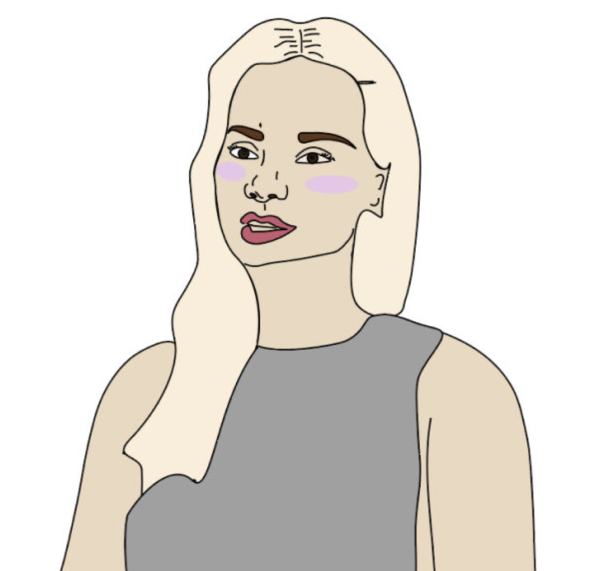

Grundlæggende indhold
Passionsitet og Adobe Premiere Pro
I tema 5, passionsprojektet, startede vi med at lave en Basadur-profil, som hjælper med at identificere ens kreative problemløsningsstil. Jeg endte med at have profilen "Conceptualizer". Derefter skulle vi finde en person at interviewe. Forberedelsen omfattede at researche og skrive spørgsmål ned, planlægge optagelserne, tegne scenerne og lave et storyboard.
Vi lærte om forskellige filmværktøjer, som vi skulle overveje, inden vi begyndte at filme: shooting for the edit, framing, indstillinger, sekvenser og b-rolls. Jeg gjorde især meget brug af b-rolls og fokuserede på dette i min video, hvilket forbedrede kvaliteten af mit interview betydeligt. Efter forberedelsen gik vi over til redigeringsprogrammet Adobe Premiere Pro. Jeg fandt det meget kompliceret i starten, da selv de mindste fejl kunne føre til forvirring. I programmet lærte vi at redigere video, synkronisere lyd og lave farvekorrektion.
 PassionsiteVirksomhedssite
Virksomhedssitet skilte sig ud fra de andre projekter fra semestret, da det skulle laves i grupper. Vi skulle være fire personer om at lave en hjemmeside. I starten tænkte jeg, at det ville blive en udfordring, men vi blev introduceret til GitHub. Ved at bruge GitHub kunne vi redigere i samme mappe i Visual Studio Code samtidigt. Hver gang vi lavede ændringer, skrev vi en besked og lavede et commit, så ændringerne blev gemt og synlige for alle. Vi brugte også en .gitignore-fil, som er relevant for at udelukke visse filer og mapper fra versionskontrol. Dette hjælper med at holde projektet rent og fri for midlertidige eller følsomme filer, der ikke skal deles.
Hjemmesiden skulle laves baseret på de færdigheder, vi har lært i tidligere projekter: grundlæggende designteori, moodboards, styling, prototyping, layoutdiagrammer, interviews, video- og billedredigering samt kodning i HTML, CSS og JavaScript til det endelige produkt.
Det eneste nye element i dette tema, som vi skulle bruge, var lottiefiles. Lottiefiles er filer, der giver mulighed for at tilføje komplekse animationer til hjemmesider og apps. For at lave dem skulle vi bruge Adobe After Effects.
VirksomhedssiteForbedringer og hvad jeg har lært
Generelt lærte jeg utrolig meget af Tema 5. Jeg fik indsigten i, hvor væsentligt det er at bede om hjælp, når man støder på udfordringer eller er i tvivl. Adskillige gange gennem semestret undlod jeg at bede om hjælp, da jeg ikke ønskede at virke uvidende, men jeg har nu indset, at det er essentielt at spørge løbende. Det bidrager ikke kun til en bedre forståelse, men forhindrer også, at man ender i unødigt langvarige processer. I gruppearbejdet lærte vi vigtigheden af at fordele opgaverne ligeligt, så belastningen ikke bliver for tung for én person. Vores kommunikation var generelt god, men i nogle tilfælde endte det med, at hver person tog de opgaver, de følte sig mest "kompetente" til. Dette førte desværre ikke altid til personlig udvikling på områder, hvor man var mindre stærk.
Efter fremlæggelsen af virksomhedssitet lærte vi, hvor afgørende det er, at alt, hvad man inkluderer, har relevans. Den video, vi indarbejdede, havde ikke nogen direkte tilknytning til sitet og endte blot med at fylde. Derfor er det afgørende at være gennemtænkt og reflektere over årsagen til handlingerne, så alt arbejde er velovervejet.